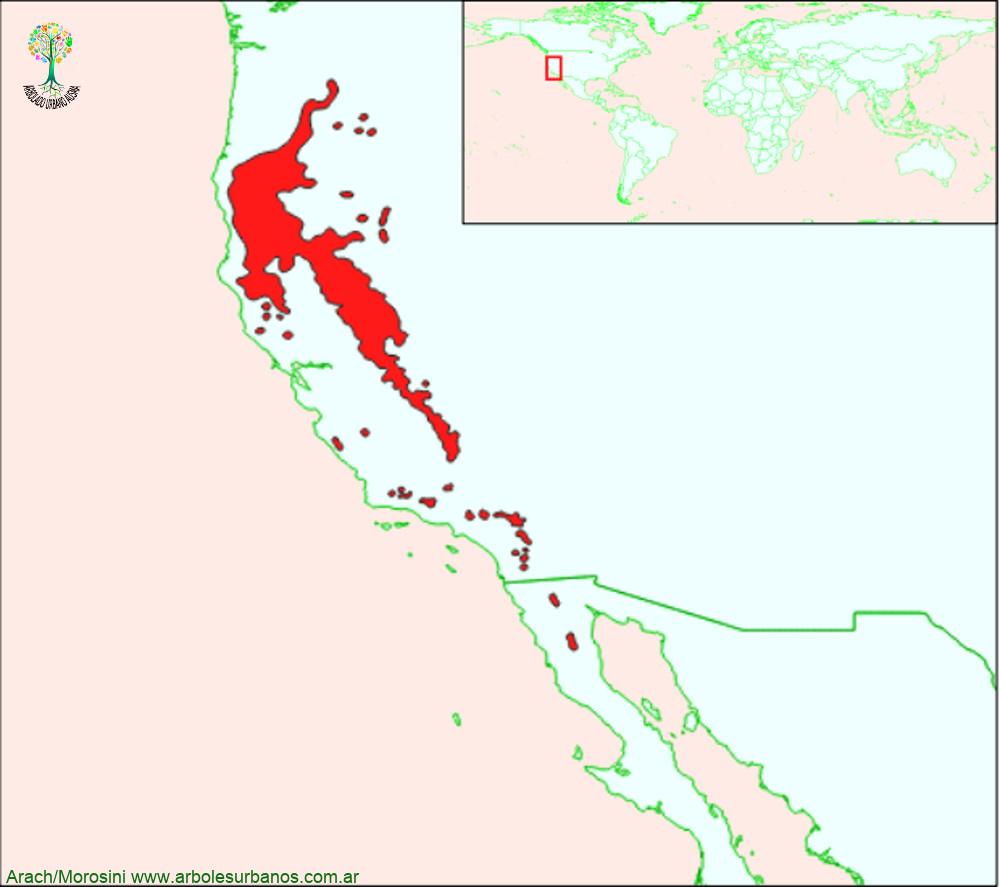

Click en las imágenes para ampliar

{kind=link}
{kind=link}
{kind=link}
{kind=link}
- NOMBRE CIENTÍFICO
- Calocedrus decurrens
- FAMILIA BOTÁNICA
- Cupresáceas
- ORIGEN
- Especie originaria de la costa de Norteamérica, desde el estado de Oregon en el norte de los Estados Unidos, hasta la península de Baja California en el norte de México en una gran variedad de tipo de suelos y precipitaciones, en distintos lugares desde el nivel del mar, hasta los 3.000 msnm. Difícilmente forma bosques puros, generalmente convive con otras coníferas de los cuales destacamos el Pino Oregon, Pino Ponderosa Jefrey de los, desde la Sierra Madre hasta la costa del Pacífico.
- DESCRIPCIÓN GENERAL
- esta conífera posee un gran porte de entre 30 y 50 metros, llegando a pasar los 60 en su lugar de origen y diámetros de hasta 3 metros. Tiene una copa de forma estrechamente columnar ó cónica. Su corteza juvenil es de color gris claro, cuando envejece es pardo rojiza profundamente longitudinalmente, desprendiéndose en tiras. Sus hojas son escuamiformes, dispuesta de manera verticilada cubriendo todas las ramas jóvenes.
- ESTRÓBILOS
- los masculinos son terminales, pequeños de color amarillo ó dorado, aparecen a finales del invierno. Los femeninos están formados por 4 escamas, de color verde y luego de fecundadas, se vuelven de color marrón y de consistencia semileñosa.
- USOS
- En el lugar de origen su principal uso es forestal, tiene una madera aromática que es utilizada en construcciones y en un momento se utilizó para hacer lápices. Fuera de su área de origen su uso es ornamental.
- REPRODUCCIÓN
- propaga a través de semillas. Se recomienda realizar una estratificación (en temperaturas de 1º a 4º) de 60 días antes de la siembra.
- PARTICULARIDADES
- existen otras dos especies de este género que crecen en el sudeste asiático (China y Taiwán) que no tan son utilizadas como la descripta.